Utazu, Kagawa: things to do, food and stays
Utazu · Kagawa
Utazu
Highlighted on the Kagawa map.

Stay
宇多津 古街の家
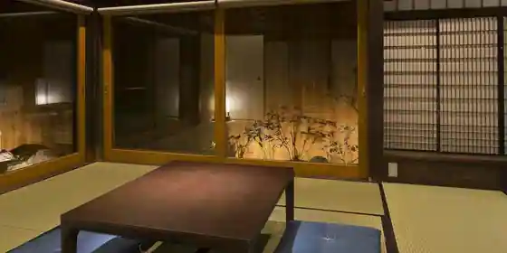
Utatsu Ko Machi No Ie
Chiiori Utazu Branch
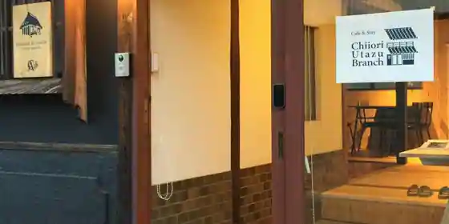
Chiiori Utazu Branch
Inn in Utazu with one group per day.
小さなホテル ミセス・マルベリー
Chisa Na Hotel Misesu Maruberi
HOTEL AZ 香川宇多津店

HOTEL AZ Kagawa Utatsu
Inn in Utazu with business travelers.
さぬきの宿 塩がま
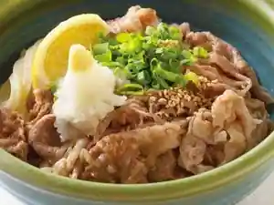
Sanukino Yado Shio Gama
宇多津グランドホテル
Utatsu Grand Hotel
Hotel in Utazu with a sauna and a large communal bath.
ホテルアネシス瀬戸大橋
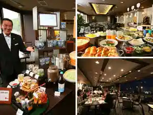
Hotel Aneshisu Setoohashi
Hotel in Utazu with breakfast available; 0-minute walk from Choshokumuryo!Utatsu Station.
蔵宿 みやびや
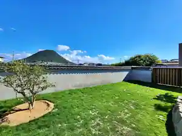
Kura Yado Miyabiya
Dining
本格手打うどん おか泉
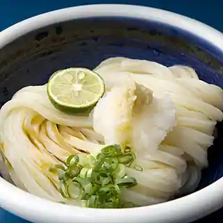
Honkaku Teuchi Udon Oka Izumi
セルフうどん麺太郎
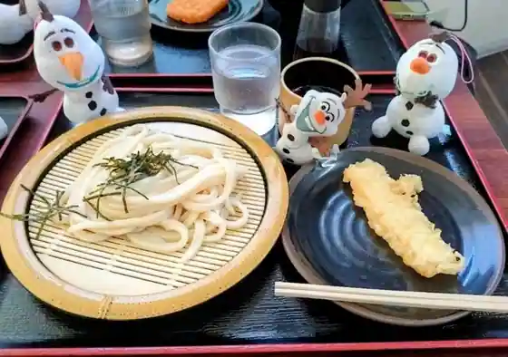
Serufu Udon Men Taro
讃岐の味 塩がま屋 宇多津店
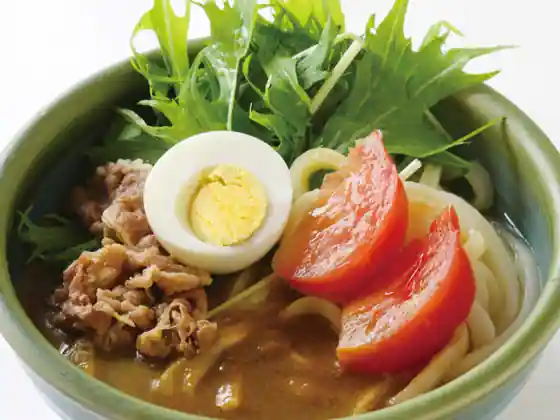
Sanuki No Aji Shio Gama Ya Utatsu
焼鳥 弁天
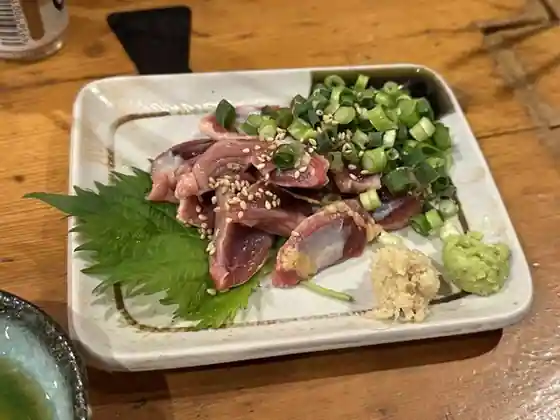
Yakitori Benten
トートコーヒー
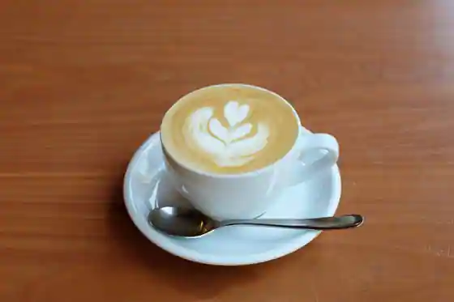
Toto Coffee
はまきた珈琲
Hamakita Coffee
まんぷく亭
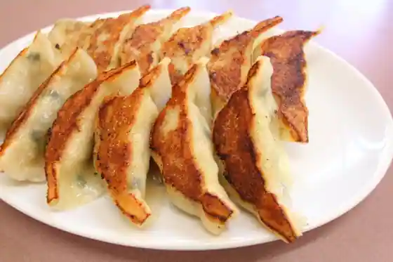
Manpuku Tei
いたずらたまご
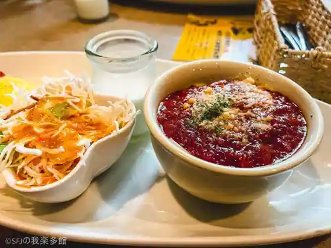
Itazuratamago
さぬきうどん むぎ
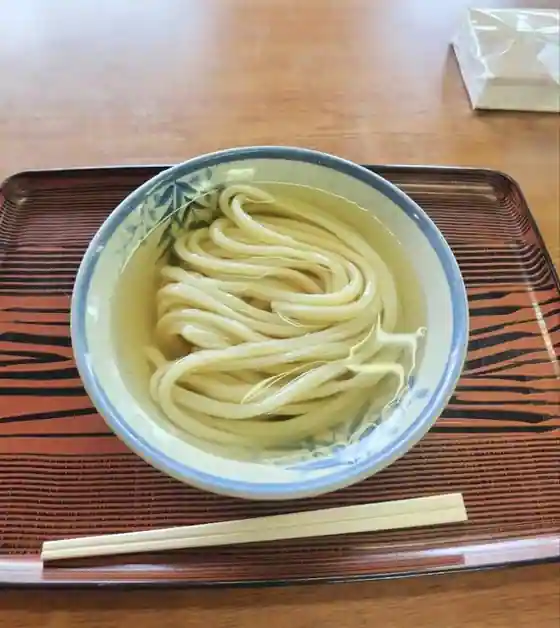
Sanukiudon Mugi
元気パン工房 ごぱん
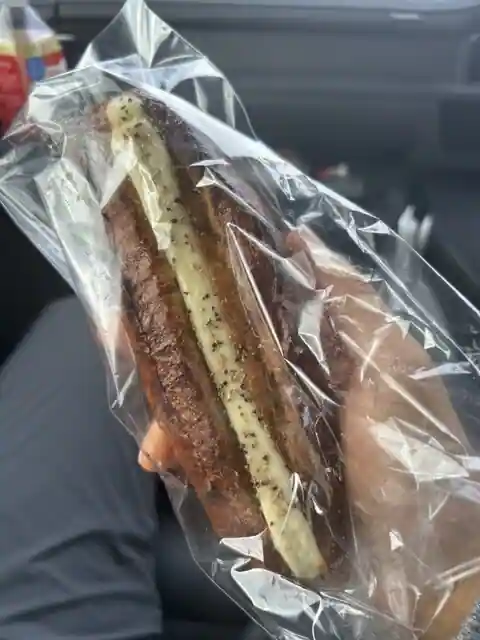
Genki Bakery Kobo Gopan
びんび三昧 坂出インター店
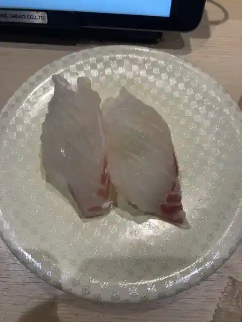
Binbi Zanmai Sakaide Inta
宇多津ホルモン
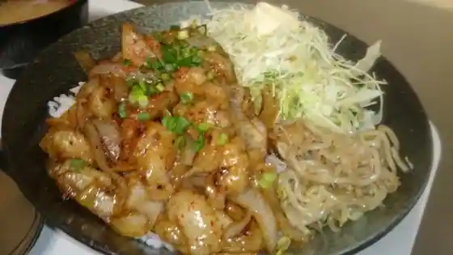
Utatsu Horumon
焼肉ひらい 宇多津店
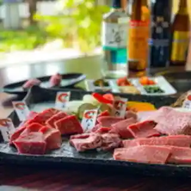
Yakiniku Hirai Utatsu
丸亀骨付鳥一丁 宇多津店
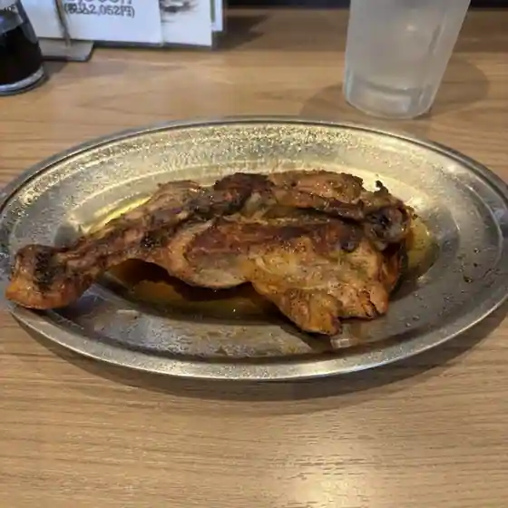
Marugame Hone Tsuki Tori Itcho Utatsu
ここも 浜街道店
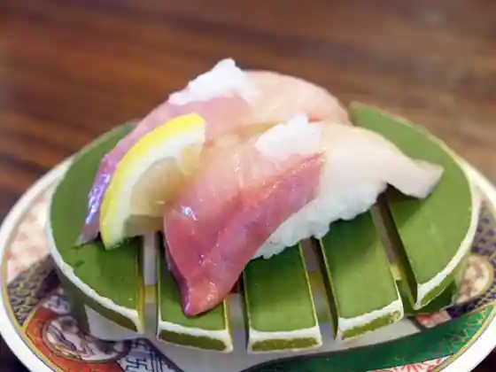
Kokomo Hama Kaido
中国麺 青龍
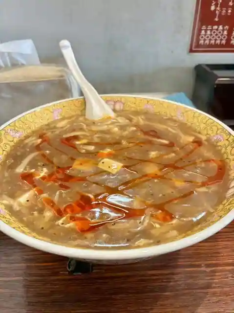
Chugoku Men Seiryu
つるぎ
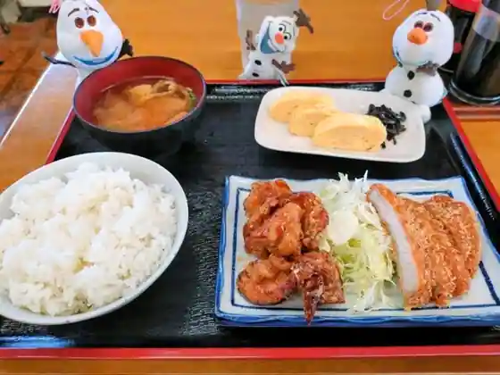
Tsurugi
海鮮食堂おくどさん イオンタウン宇多津店
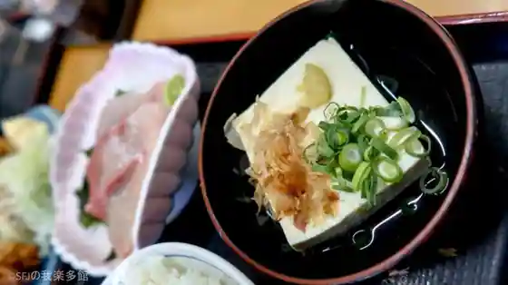
Kaisen Shokudo Okudosan Iontaun Utatsu
くぼさんのとうふ
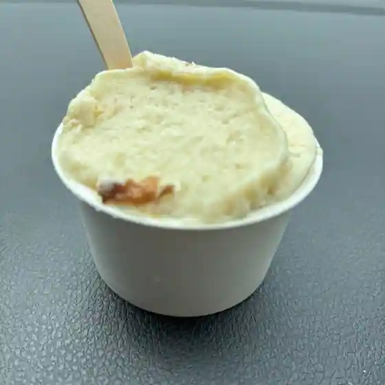
Kubosannotofu
珈匠 宇多津店
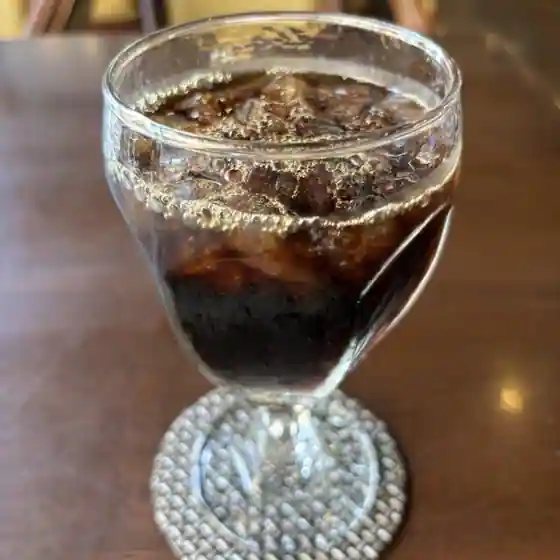
Ka Takumi Utatsu
和菜旬菜 ひだまり
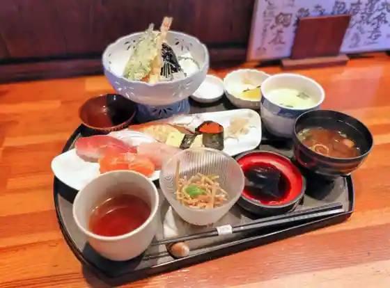
Wa Na Jun Na Hidamari
青春のおそばやさん
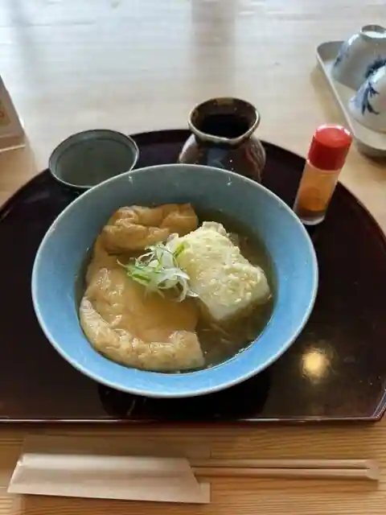
Seishun Nosobayasan
muus
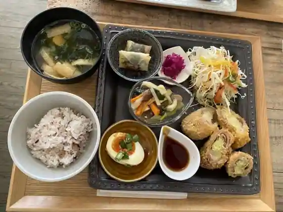
muus
カーナピーナ 宇多津店
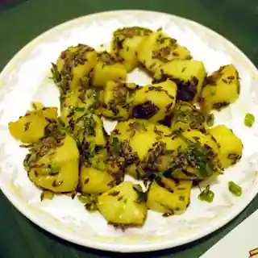
Kanapina Utatsu
Sights
Gorudotawa
Utazu Rinkai Park

Shikoku Aquarium

Fukugen Shioda

Utazu Eki

Ao no Yama